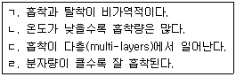

환경기능사 (2013-04-14 기출문제)
1과목: 대기오염방지
1. 대기오염공정시험기준상 굴뚝 배출가스 중 질소 산화물을 분석하는데 사용되는 방법은?
- 페놀디술폰산법
- 중화적정법
- 침전적정법
- 아르세나조 피법
(정답률: 73%)

2. 다음 중 연소 시 질소산화물의 저감방법으로 가장 거리가 먼 것은?
- 배출가스 재순환
- 2단 연소
- 과잉공기량 증대
- 연소부분 냉각
(정답률: 87%)
3. 흡수장치의 흡수액이 갖추어야 할 조건으로 옳지 않은 것은?
- 용해도가 작아야 한다.
- 점성이 작아야 한다.
- 휘발성이 작아야 한다.
- 화학적으로 안정해야 한다.
(정답률: 71%)
4. 흡수법을 사용하여 오염물질을 제거하고자 한다. 헨 리법칙에 잘 적용되는 물질과 가장 거리가 먼 것은?
- NO2
- CO
- SO2
- NO
(정답률: 57%)
5. 탄소 18kg이 완전연소 하는데 필요한 이론공기량 (Sm3)은?
- 107
- 160
- 203
- 208
(정답률: 70%)
6. 다음 중 압력손실이 가장 큰 집진장치는?
- 중력집진장치
- 전기집진장치
- 원심력집진장치
- 벤츄리스크러버
(정답률: 82%)
7. 다음 연료 중 탄수소비(C/H)가 가장 작은 연료는?
- 중유
- 휘발유
- 경유
- 등유
(정답률: 72%)
8. 런던 스모그와 로스앤젤레스 스모그에 대한 비교로 옳지 않은 것은? (순서대로 <항 목> <런던 스모그> <로스엔젤레스 스모그>)
- 발생시 기온, 4℃ 이하, 24~32℃
- 발생시 습도, 85% 이상, 70% 이하
- 발생 시간, 이른 아침, 한 낮
- 발생한 달, 7~9월, 12~1월
(정답률: 76%)
9. 흡착법에 관한 설명으로 옳지 않은 것은?
- 물리적 흡착은 Van der Waals 흡착이라고도 한다.
- 물리적 흡착은 낮은 온도에서 흡착량이 많다.
- 화학적 흡착인 경우 흡착과정이 주로 가역적이며 흡착제의 재생이 용이하다.
- 흡착제는 단위질량당 표면적이 큰 것이 좋다.
(정답률: 80%)
10. 측정하고자 하는 입자와 동일한 침강속도를 가지며 밀도가 1g/cm3인 구형입자로 정의되는 직경은?
- 마틴 직경
- 등속도 직경
- 스토크스 직경
- 공기역학 직경
(정답률: 58%)
11. 상온에서 무색투명하며 일반적으로 불쾌한 자극성 냄새를 내는 액체이며, 끓는점은 46.45℃(760mmHg)이며, 인화점은 -30℃ 정도인 것은?
- SO2
- HF
- Cl2
- CS2
(정답률: 53%)
12. 과잉공기비 m을 크게 (m>1) 하였을 때의 연소 특성 으로 옳지 않은 것은?
- 연소가스 중 CO 농도가 높아져 산업공해의 원인이 된다.
- 통풍력이 강하여 배기가스에 의한 열손실이 크다.
- 배기가스의 온도저하 및 SOx, NOx 등의 생성물이 증가한다.
- 연소실의 냉각효과를 가져온다.
(정답률: 51%)
13. 여과집진장치에 사용되는 다음 여포재료 중 가장 높은 온도에서 사용이 가능한 것은?
- 목면
- 양모
- 카네카론
- 글라스화이버
(정답률: 84%)
14. 중력집진장치의 효율향상 조건이라 볼 수 없는 것은?
- 침강실 내의 처리가스 속도를 작게 한다.
- 침강실 내의 배기가스 기류를 균일하게 한다.
- 침강실의 높이는 작고, 길이는 길게 한다.
- 침강실의 blow down 효과를 유발하여 난류현상을 유발한다.
(정답률: 69%)
15. SO2의 1일 평균농도는 O℃, 1atm에서 100㎍/m3 이다. ppm으로 환산하면 얼마인가? (단, SO2의 분자량 : 64)
- 0.035
- 0.35
- 3.5
- 35
(정답률: 44%)
2과목: 폐수처리
16. 침전지 유입부에 설치하는 정류판(baffle) 의 기능으로 가장 적합한 것은?
- 침전지 유입수의 균일한 분배와 분포
- 침전지 내의 침사물 수집
- 바람을 막아 표면난류 방지
- 침전 슬러지의 재부상 방지
(정답률: 70%)
17. BOD 400mg/L, 유량 3000m3/day 인 폐수를 MLSS 3000mg/L 인 포기조에서 체류시간을 8시간으로 운전 하고자 한다. 이 때 F/M비 (BOD-MLSS 부하)는?
- 0.2
- 0.4
- 0.6
- 0.8
(정답률: 52%)
18. 다음 중 적조현상을 발생시키는 주된 원인물질은?
- Cd
- P
- Hg
- Cl
(정답률: 84%)
19. 다음 수처리 공정 중 스톡스(Stokes) 법칙이 가장 잘 적용되는 공정은?
- 1차 소화조
- 1차 침전지
- 살균조
- 포기조
(정답률: 79%)
20. C2H5NO2 150g 분해에 필요한 이론적 산소요구량(g)은? (단, 최종분해산물은 CO2, H2O, HNO3 이다.)
- 89g
- 94g
- 112g
- 224g
(정답률: 37%)
21. Wipple이 구분한 하천의 자정작용 단계 중 용존 산소의 농도가 아주 낮거나 때로는 거의 없어 부패 상태에 도달하게 되는 지대는?
- 정수 지대
- 회복 지대
- 분해 지대
- 활발한 분해 지대
(정답률: 78%)
22. Cr2O72-이온에서 크롬(Cr)의 산화수는?
- -5
- -6
- +5
- +6
(정답률: 71%)
23. 침전지 또는 농축조에 설치된 스크레이퍼의 사용 목적으로 가장 적합한 것은?
- 침전물을 부상시키기 위해서
- 스컴(scum)을 방지하기 위해서
- 슬러지(sludge)를 혼합하기 위해서
- 슬러지(sludge)를 끌어 모으기 위해서
(정답률: 79%)
24. 다음 중 물질 순환속도가 가장 느린 것은?
- 망간
- 탄소
- 수소
- 산소
(정답률: 76%)
25. A 공장의 BOD 배출량은 400인의 인구당량에 해당 한다. A 공장의 폐수량이 200m3/day 일 때 이 공장 폐수의 BOD(mg/L) 값은? (단, 1인이 하루에 배출하는 BOD는 50g 이다.)
- 100
- 150
- 200
- 250
(정답률: 37%)
26. 다음 중 6가크롬(Cr+6) 함유 폐수를 처리하기 위한 가장 적합한 방법은?
- 아말감법
- 환원침전법
- 오존산화법
- 충격법
(정답률: 80%)
27. 폐수 중의 오염물질을 제거할 때 부상이 침전보다 좋은 점을 설명한 것으로 가장 적합한 것은?
- 침전속도가 느린 작거나 가벼운 입자를 짧은 시간내에 분리시킬 수 있다.
- 침전에 의해 분리되기 어려운 유해 중금속을 효과적으로 분리시킬 수 있다.
- 침전에 의해 분리되기 어려운 색도 및 경도 유발물질을 효과적으로 분리시킬 수 있다.
- 침전속도가 빠르고 큰 입자를 짧은 시간 내에 분리 시킬 수 있다.
(정답률: 68%)
28. 다음 폐수처리공법 중 고액분리 방법과 가장 거리가 먼 것은?
- 부상분리법
- 전기투석법
- 스크리닝
- 원심분리법
(정답률: 71%)
29. 명반(alum)을 폐수에 첨가하여 응집처리를 할 때, 투입조에 약품 주입 후 응집조에서 완속교반을 행하 는 주된 목적은?
- 명반이 잘 용해되도록 하기 위해
- floc과 공기와의 접촉을 원활히 하기 위해
- 형성되는 floc을 가능한 한 뭉쳐 밀도를 키우기 위해
- 생성된 floc을 가능한 한 미립자로 하여 수량을 증가 시키기 위해
(정답률: 58%)
30. 액체염소의 주입으로 생성된 유리염소, 결합잔류염소의 살균력의 크기를 바르게 나열한 것은?
- HOCl > Chloramines > OCl-
- OCI- > HOCl> Chloramines
- HOCl > OCl- > Chloramines
- OCI- > Chloramines > HOCI
(정답률: 76%)
31. A 침전지가 6,000m3/day의 하수를 처리한다. 유입수 의 SS농도가 150mg/L, 유출수의 SS농도가 90mg/L 이라면 이 침전지의 SS제거율(%)은?
- 60%
- 50%
- 40%
- 30%
(정답률: 50%)
32. 함수율 98%(중량)의 슬러지를 농축하여 함수율 94%(중량)인 농축 슬러지를 얻었다. 이 때 슬러지의 용적 은 어떻게 변화되는가? (단, 슬러지의 비중은 1.0으로 가정한다.)
- 원래의 1/2
- 원래의 1/3
- 원래의 1/6
- 원래의 1/9
(정답률: 68%)
33. 폐수처리에서 여과공정에 사용되는 여재로 가장 거리 가 먼 것은?
- 모래
- 무연탄
- 규조토
- 유리
(정답률: 69%)
34. 4℃에서 순수한 물의 밀도는 1g/mL 이다. 이때 물 1L의 질량은 얼마인가?
- 1g
- 10g
- 100g
- 1000g
(정답률: 63%)
35. 다음 보기 중 물리적 흡착의 특징을 모두 고른 것은?

- ㄱ, ㄴ
- ㄴ, ㄹ
- ㄱ, ㄴ, ㄷ
- ㄴ, ㄷ, ㄹ
(정답률: 68%)
3과목: 폐기물처리
36. 슬러지를 농축시킴으로써 얻는 잇점으로 가장 거리가 먼 것은?
- 소화조 내에서 미생물과 양분이 잘 접촉할 수 있으므로 효율이 증대된다.
- 슬러지 개량에 소요되는 약품이 적게 든다.
- 후속 처리시설인 소화조 부피를 감소시킬 수 있다.
- 난분해성 중금속의 완전제거가 용이하다.
(정답률: 59%)
37. 침출수 내 난분해성 유기물을 펜톤산화법에 의해 처리하고자 할 때, 사용되는 시약의 구성으로 옳은 것은?
- 과산화수소 + 철
- 과산화수소 + 구리
- 질산 + 철
- 질산 + 구리
(정답률: 72%)
38. 합성차수막 중 PVC의 장점으로 가장 거리가 먼 것은?
- 작업이 용이하다.
- 강도가 높다.
- 접합이 용이하다.
- 자외선, 오존, 기후에 강하다.
(정답률: 79%)
39. 압축비 1.67로 쓰레기를 압축하였다면 압축 전과 압 축 후의 체적 감소율은 몇 % 인가? (단, 압축비는 Vi / Vf 이다.)
- 약 20%
- 약 40%
- 약 60%
- 약 80%
(정답률: 48%)
40. 소각시설의 연소온도를 높이기 위한 방법으로 옳지 않은 것은?
- 발열량이 높은 연료사용
- 공기량의 과다주입
- 연료의 예열
- 연료의 완전연소
(정답률: 74%)
41. 다음 중 로타리킬른 방식의 장점으로 거리가 먼 것은?
- 열효율이 높고, 적은 공기비로도 완전연소가 가능하다.
- 예열이나 혼합 등 전처리가 거의 필요 없다.
- 드럼이나 대형용기를 파쇄하지 않고 그대로 투입할 수 있다.
- 공급장치의 설계에 있어서 유연성이 있다.
(정답률: 49%)
42. 폐기물 발생량의 산정방법으로 가장 거리가 먼 것은?
- 적재차량 계수분석
- 직접계근법
- 간접계근법
- 물질수지법
(정답률: 65%)
43. 다음 중 해안매립공법에 해당하는 것은?
- 셀공법
- 도량형공법
- 순차투입공법
- 샌드위치공법
(정답률: 75%)
44. 폐기물 시료 100kg을 달아 건조시킨 후의 시료 중량을 측정하였더니 40kg이였다. 이 폐기물의 수분함량(%, w/w) 은?
- 40%
- 50%
- 60%
- 80%
(정답률: 71%)
45. 폐기물을 파쇄하는 이유로 옳지 않은 것은?
- 겉보기 밀도의 증가
- 고체의 치밀한 혼합
- 부식효과 방지
- 비표면적의 증가
(정답률: 59%)
46. 다음 중 유기성 폐기물의 퇴비화 특성으로 가장 거리 가 먼 것은?
- 생산된 퇴비는 비료가치가 높으며, 퇴비완성 시 부피 감소율이 70% 이상으로 큰 편이다.
- 초기 시설투자비가 낮고, 운영 시 소요 에너지도 낮은 편이다.
- 다른 폐기물 처리기술에 비해 고도의 기술수준이 요구 되지 않는다.
- 퇴비 제품의 품질표준화가 어렵고, 부지가 많이 필요한 편이다.
(정답률: 65%)
47. 다음 중 유기성 액상 폐기물을 호기성 분해시킬 때 미생물이 가장 활발하게 활동하는 기간은?
- 고정기
- 대수증식기
- 휴지기
- 사멸기
(정답률: 82%)
48. 폐기물 분석을 위한 시료의 축소방법에 해당하지 않는 것은?
- 구획법
- 원추4분법
- 교호삽법
- 면체분할법
(정답률: 71%)
49. 폐기물의 발열량에 대한 설명으로 옳지 않은 것은?
- 발열량은 연료의 단위량 (기체연료는 1Sm3, 고체와 액체연료는 1kg) 이 완전연소 할 때 발생하는 열량(kcal)이다.
- 고위발열량은 폐기물 중의 수분 및 연소에 의해 생성된 수분의 응축열을 포함하는 열량이다.
- 열량계로 측정되는 열량은 저위발열량이다.
- 실제 연소시설에서는 고위발열량에서 응축열을 공제한 잔여열량이 유효하게 이용된다.
(정답률: 56%)
50. 쓰레기 수거노선을 결정하는데 유의할 사항으로 옳지 않은 것은?
- 가능한 한 한번 간 길은 가지 않는다.
- U자형 회전을 피해 수거한다.
- 발생량이 많은 곳은 하루 중 가장 먼저 수거한다.
- 가능한 한 반 시계방향으로 수거노선을 정한다.
(정답률: 78%)
51. 발열량이 800kcal/kg 인 폐기물을 하루에 6톤씩 소각 한다. 소각로 연소실의 용적이 125m3이고, 1일 운전 시간이 8시간이면 연소실의 열 발생률은?
- 3,600 kcal/m3·hr
- 4,000 kcal/m3·hr
- 4,400 kcal/m3·hr
- 4,800 kcal/m3·hr
(정답률: 49%)
52. 퇴비화시 부식질의 역할로 옳지 않은 것은?
- 토양능의 완충능을 증가시킨다.
- 토양의 구조를 양호하게 한다.
- 가용성 무기질소의 용출량을 증가시킨다.
- 용수량을 증가시킨다.
(정답률: 52%)
53. 인구 240,327 명의 도시에서 150,000ton/년의 쓰레기를 수거하였다. 이 도시의 쓰레기 발생량은?
- 1.71kg/인·일
- 1.95kg/인·일
- 2.⑤kg/인·일
- 2.31kg/인·일
(정답률: 53%)
54. 도시폐기물을 개략분석(proximate analysis) 시 구성되는 4가지 성분으로 거리가 먼 것은?
- 수분
- 질소분
- 휘발성고형물
- 고정탄소
(정답률: 46%)
55. 분뇨의 특성과 거리가 먼 것은?
- 유기물 농도 및 염분함량이 낮다.
- 질소농도가 높다.
- 토사와 협잡물이 많다.
- 시간에 따라 크게 변한다.
(정답률: 69%)
4과목: 소음 진동학
56. 손으로 소음계를 잡고 측정할 경우 소음계는 측정자의 몸으로부터 얼마 이상 떨어져야 하는가?
- 0.1m 이상
- 0.2m 이상
- 0.3m 이상
- 0.5m 이상
(정답률: 66%)
57. 파동의 특성을 설명하는 용어로 옳지 않은 것은?
- 파동의 가장 높은 곳을 마루라 한다.
- 매질의 진동방향과 파동의 진행방향이 직각인 파동을 횡파라고 한다.
- 마루와 마루 또는 골과 골 사이의 거리를 주기라 한다.
- 진동의 중앙에서 마루 또는 골까지의 거리를 진폭이라 한다.
(정답률: 64%)
58. 방진대책을 발생원, 전파경로, 수진측 대책으로 분류 할 때 다음 중 전파경로 대책에 해당하는 것은?
- 가진력을 감쇠시킨다.
- 진동원의 위치를 멀리하여 거리감쇠를 크게 한다.
- 동적흡진한다.
- 수진측의 강성을 변경시킨다.
(정답률: 66%)
59. 길이 10m, 폭 10m, 높이 10m 인 실내의 바닥, 천장, 벽면의 흡음율이 모두 0.0161 일 때 Sabine의 식을 이용하여 잔향 시간(sec)을 구하면?
- 0.17
- 1.7
- 16.7
- 167
(정답률: 56%)
60. 점음원에서 5m 떨어진 지점의 음압레벨이 60dB이다. 이 음원으로부터 10m 떨어진 지점의 음압레벨은?
- 30dB
- 44dB
- 54dB
- 58dB
(정답률: 63%)